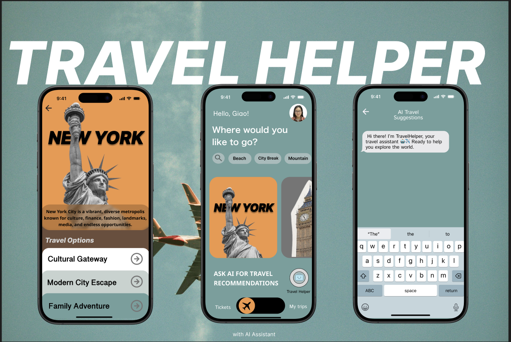
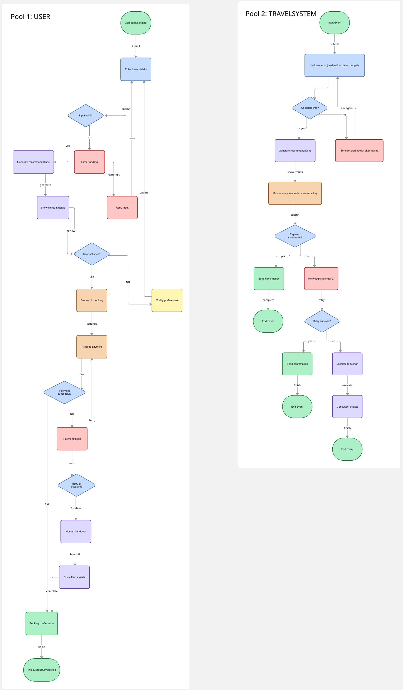

PRODUCT THINKING · UX · BUSINESS ANALYSIS
TravelHelper — AI Chatbot for Travel Decision Support
Designed an AI-assisted travel booking experience that reduces decision fatigue and booking abandonment through conversational guidance and human fallback support.

Product / Business Analysis
4 weeks
Figma, Miro
Conversational UX, BPMN, Service Design
Goal
Design an AI-assisted travel booking experience that reduces decision fatigue and booking abandonment through conversational guidance and human fallback support.
Background Information
Travel booking platforms often overwhelm users with too many filters, tabs, and choices.
This leads to 20–30 minutes of comparison time, fragmented planning across multiple tabs, and frustration when systems cannot handle exceptions or unclear requests.
The dataset here is not numerical but behavioral: user pain points in travel decision-making.
Analysis Table
Beyond the surface-level pain points, I broke down each user problem into: how it actually affects the experience, and what product response I built to solve it.
| User / Business Problem | Impact on Experience | Product / Service Response |
|---|---|---|
| Users feel overwhelmed by too many travel options | Decision fatigue and slower booking decisions | Guided conversational prompts: destination, budget, purpose |
| Unclear or incomplete inputs | User frustration and drop-off risk | Validation and re-prompt flow, no silent failure |
| Payment failures during checkout | Booking abandonment | Retry logic + alternative method suggestion |
| Lack of personalized recommendations | Lower engagement and conversion | Recommendation-based filtering via conversation, not search bars |
| Users require support beyond chatbot capability | Increased operational friction | Human handover workflow, escalation without dead-end |
Setup
First, I mapped the core user problems into five categories: choice overload, unclear inputs, payment failures, lack of personalization, and unsupported requests.
Next, I designed a BPMN workflow with two explicit pools (User + System) to separate what the user does from what the system handles.
This forced clarity on validation, retry logic, and escalation paths.
🔽 Click to view full TravelHelper interface
Fig 1. Main conversational interface (Figma)

These steps ensured the solution was structured as a decision-support system, not just a chatbot UI.
Workflow Design and Creation
With the problem-solution mapping, I created a BPMN-based booking workflow that includes:
- Input validation before generating recommendations
- Re-prompt loop instead of dead-end
- Retry logic for payment failures
- Human escalation path
- Positive closure with confirmation and email
In addition to the workflow, I designed a conversational interface with three principles: guided interaction, conversational simplicity, and emotional design.
🔽 Click to view BPMN 2-pool workflow (User + TravelHelper System)
Fig 2. BPMN workflow showing validation, retry logic, escalation, and recovery paths.

The workflow explicitly shows where things break, what happens after a failed payment, and when the system hands over to a human.
Conclusion
The TravelHelper case study demonstrates my ability to translate user pain points into structured workflows, design for exception handling, and close the loop between UX decisions and business outcomes.
These skills apply directly to Product Analyst and Business Analyst roles where process design and service recovery matter.